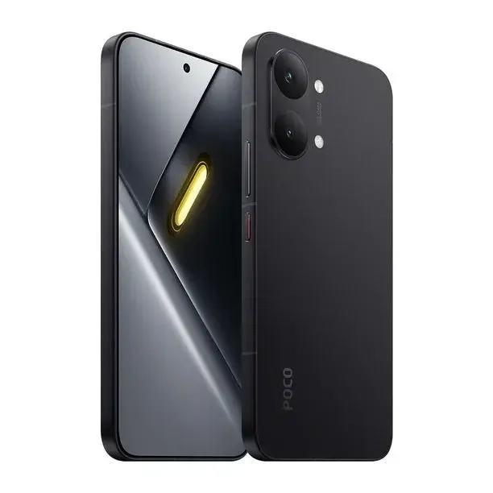

제품 정보
IT홈은 7월 17일, 기술 매체 GizChina의 보도를 인용하여 Xiaomi Poco X8 스마트폰이 HyperOS 코드베이스에서 발견되었다고 전했습니다.
사양 및 모델 구성
Poco X8은 Redmi Note 17 Pro 중국 버전과 동일한 사양을 탑재할 예정이며, 이는 해당 기기의 리브랜딩 모델로 출시될 가능성을 시사합니다. 반면 글로벌 버전인 Redmi Note 17 Pro 5G는 다른 카메라 구성을 채택할 예정입니다.
- Poco X8: 5000만 화소 메인 카메라 + 200만 화소 심도(depth) 카메라
- Redmi Note 17 Pro 5G (글로벌 버전): 800만 화소 초광각 렌즈
출시 일정 및 배터리
현재 Poco 라인업에는 X8 Pro와 X8 Pro Max 모델만 존재하며, 표준형 X8이 누락된 이유는 출시 일정 때문으로 분석됩니다. 2026년 상반기에 Redmi Note 17 Pro가 등장하지 않아 Poco 측에서 대응하는 글로벌 버전을 동시 출시할 수 없기 때문입니다.
또한, Redmi Note 17 Pro에 탑재된 실리콘-카본 배터리는 일부 해외 시장에서 인증을 받기 어렵습니다. 이에 따라 Redmi Note 17 Pro 글로벌 버전은 인증 요건을 충족하기 위해 일반 배터리로 변경될 것으로 예상됩니다.
- Redmi Note 17 Pro (중국 버전): 9000mAh 실리콘-카본 배터리
- Redmi Note 17 Pro (글로벌 버전): 8340mAh 일반 배터리
총평
Xiaomi Poco X8이 HyperOS 코드베이스에서 확인되었으며, Redmi Note 17 Pro 중국판의 리브랜딩 모델로 출시될 가능성이 높습니다. 글로벌 버전은 인증 문제로 인해 배터리 용량 및 카메라 사양이 일부 변경될 것으로 예상됩니다.
新机现身代码库
Xiaomi Poco X8 已出现在澎湃 HyperOS 的代码库中。该机型被认为是 REDMI Note 17 Pro 中国版的“换壳”国际版本。
相机配置对比
根据目前掌握的信息，Poco X8 与全球版 REDMI Note 17 Pro 在镜头配置上有所不同：
- Poco X8：配备 5000 万像素主摄 + 200 万像素景深镜头（与 REDMI Note 17 Pro 中国版一致）。
- REDMI Note 17 Pro 5G 全球版：采用 800 万像素超广角镜头。
产品策略与电池规格
由于 REDMI Note 17 Pro 预计于 2026 年上半年才在国内上市，导致 Poco X8 标准版无法同步推出。此外，受限于海外市场的认证要求，两款机型的电池技术路径不同：
- REDMI Note 17 Pro 中国版：配备 9000mAh 硅碳电池。
- REDMI Note 17 Pro 全球版：预计采用 8340mAh 的传统电池，以满足海外市场的认证要求。
总结
Xiaomi Poco X8 已在 HyperOS 代码库中现身，被视为 REDMI Note 17 Pro 中国版的国际对应机型。由于发布时间安排及海外市场认证标准的差异，Poco X8 与全球版 REDMI Note 17 Pro 在相机配置和电池容量上存在明显区别。
製品情報
ITホームは7月17日、技術メディアGizChinaの報道を引用し、Xiaomi Poco X8がHyperOSのコードベース内で発見されたことを報じました。
仕様およびモデル構成
Poco X8はRedmi Note 17 Pro（中国版）と同一の仕様を搭載する見込みであり、同機のリブランドモデルとして発売される可能性が示唆されています。一方で、グローバル版のRedmi Note 17 Pro 5Gは異なるカメラ構成を採用する予定です。
- Poco X8: 5000万画素メインカメラ + 200万画素深度（depth）カメラ
- Redmi Note 17 Pro 5G（グローバル版）: 800万画素超広角レンズ
リリーススケジュールとバッテリー
現在、PocoラインアップにはX8 ProおよびX8 Pro Maxモデルのみが存在しており、標準モデルのX8が欠けている理由は発売スケジュールの都合によるものと分析されています。2026年上半期にRedmi Note 17 Proが登場しないため、Poco側で対応するグローバル版を同時展開することができないためです。
また、Redmi Note 17 Proに搭載されているシリコンカーボンバッテリーは、一部の海外市場において認証を受けることが困難です。これに伴い、Redmi Note 17 Proのグローバル版は認証要件を満たすために、通常のバッテリーに変更される見込みです。
- Redmi Note 17 Pro（中国版）: 9000mAh シリコンカーボンバッテリー
- Redmi Note 17 Pro（グローバル版）: 8340mAh 通常バッテリー
まとめ
Xiaomi Poco X8はHyperOSのコードベースで確認されており、Redmi Note 17 Pro（中国版）のリブランドモデルとして登場する可能性が高いです。グローバル版については、認証の問題によりバッテリー容量やカメラ構成が一部変更される見通しです。
Product Information
On July 17, IT Home reported, citing GizChina, that the Xiaomi Poco X8 smartphone was discovered within the HyperOS codebase.
Specifications and Model Configuration
The Poco X8 is expected to feature specifications identical to the Chinese version of the Redmi Note 17 Pro, suggesting it will be released as a rebranded model. In contrast, the global version of the Redmi Note 17 Pro 5G is planned to feature a different camera configuration.
- Poco X8: 50MP main camera + 2MP depth camera
- Redmi Note 17 Pro 5G (Global Version): 8MP ultra-wide lens
Release Schedule and Battery
The current Poco lineup includes only the X8 Pro and X8 Pro Max models. The absence of a standard X8 is analyzed to be due to release timing; since the Redmi Note 17 Pro will not be available in the first half of 2026, Xiaomi cannot launch a corresponding global version simultaneously.
Furthermore, silicon-carbon batteries used in the Redmi Note 17 Pro are difficult to certify in some international markets. Consequently, the global version of the Redmi Note 17 Pro is expected to switch to a standard battery to meet certification requirements.
- Redmi Note 17 Pro (Chinese Version): 9000mAh silicon-carbon battery
- Redmi Note 17 Pro (Global Version): 8340mAh standard battery
Overall Outlook
The Xiaomi Poco X8 has been identified in the HyperOS codebase and is highly likely to be released as a rebranded version of the Chinese Redmi Note 17 Pro. Due to certification issues, the global versions are expected to feature modified battery capacities and camera specifications.
Summary
The Xiaomi Poco X8 was discovered in the HyperOS codebase and will likely serve as a rebranded model of the Redmi Note 17 Pro. However, due to international certification hurdles, the global version is expected to feature different camera hardware and a standard battery compared to its Chinese counterpart.
